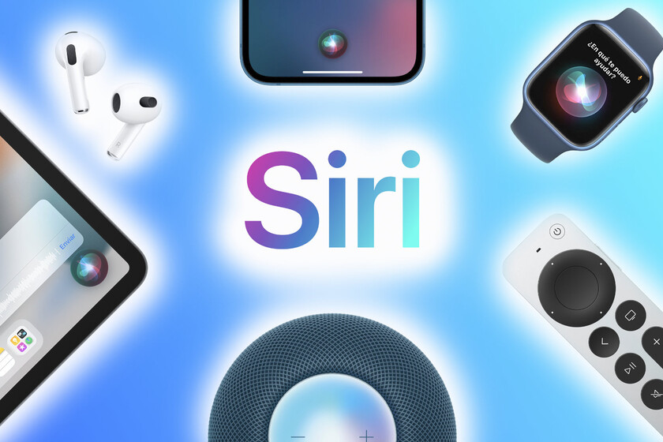
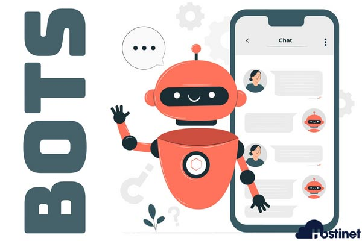

2016
Llega la web 4.0 que se centra en ofrecer un comportamiento más inteligente y más predictivo.
2017
Google abre Sistema de Inteligencia Artificial

2018
Se registra una cifra de 3.578 millones de usuarios en internet

2019
La web 4.0 permite la computación cognitiva.

2020
Llegan Siri, Google Now y Cortana renovados que entienden cada vez de forma más precisa y correcta.
2021
Se introducen los Bots o "Hablar al texto" (Speech to text)
CONTINUARA...
WEB 5.0 Encaminada a... ¿Un dispositivo todo en uno? ¿Identificar y categorizar emociones?
